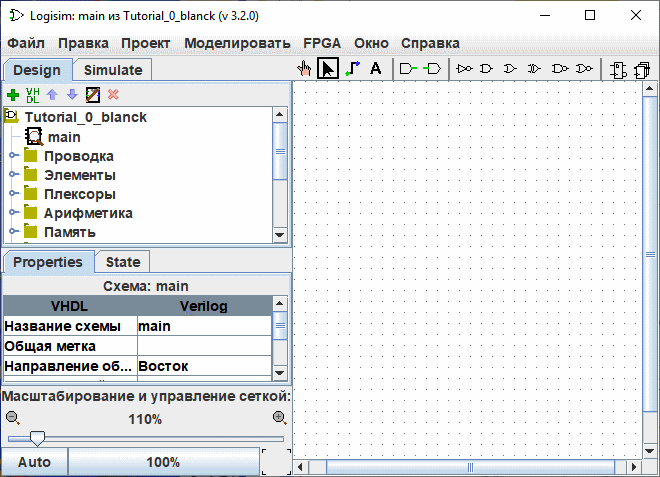

Предыдущий: Руководство для начинающих
Шаг 0: Начало работы
После запуска Logisim-evolution на экране появится главное рабочее окно, структура которого показана на иллюстрации ниже. В зависимости от используемой операционной системы и графической оболочки визуальное оформление некоторых системных элементов управления может незначительно отличаться.

Графический интерфейс программы структурно разделён на три основные рабочие зоны: Панель проводника (слева сверху), Таблицу атрибутов / панель свойств (слева снизу) и Холст (в центре). В верхней части главного окна традиционно располагаются Строка меню и Панель инструментов.

В рамках данного базового руководства расширенный функционал панели проводника и таблицы атрибутов не задействуется, поэтому на начальном этапе их можно не принимать во внимание. Взаимодействие со строкой меню реализовано интуитивно понятно и соответствует стандартам большинства графических САПР.
Основное внимание в этом уроке будет уделено Панели инструментов и Холсту. Холст представляет собой интерактивную область для непосредственного черчения вашей цифровой схемы, а панель инструментов предоставляет быстрый доступ к базовым компонентам (вентилям, контактам) и режимам взаимодействия с чертежом.